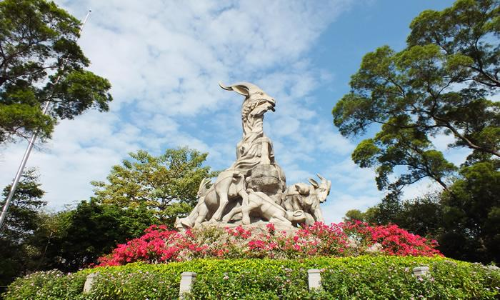

交通指引

公园正门
广州市解放北路988号
地铁：地铁2号线越秀公园站B1出口
公交线路：
途径公交车：（越秀公园站）
- 5路
- 高峰快线5
- 7路
- 高峰快线7
- 夜8路
- 夜12路
- 21路
- 夜22路
- 24路
- 夜26路
- 高峰快线38
- 高峰快线40
- 夜40路
- 42路
- 高峰快线44
- 高峰快线45
- 夜55路
- 58A路
- 58路
- 高峰快线69
- 夜79路
- 87路
- 101路
- 103路
- 105路
- 108路
- 109路
- 110路
- 113路
- 124路
- 180路
- 182路
- 186路
- 211路
- 244A
- 高峰快线244路
- 244B路
- 256路
- 265路
- 273路
- 284路
- 519路
- 528路
- 543路
- 555路
- 556路
公园北门
广州市环市中路
地铁：地铁5号线广州火车站出站后往西步行1000米
公交线路：
途径公交车：（越秀公园北门站）
- B2路
- B2A路
- 节假日公交专线2
- B10路
- 夜14路
- 夜15路
- 夜25路
- 30路
- 夜41路
- 夜7路
- 夜88路
- 109路
- 110路
- 111路
- 185路
- 201路
- 225路
- 278路
- 280路
- 290路
- 301A路
- 301路
- 529路
- 545路
- 550路
- 862路
- 862B路
- 886A路
- 886路
公园东门
广州市小北路
地铁：地铁5号线小北站出站后往南步行500米
公交线路：
途径公交车：（小北花圈站）
- 旅游公交1线
- 夜4路
- 夜5路
- 6路
- 夜9路
- 10路
- 夜32路
- 36路
- 高峰快线52
- 夜56路
- 66路
- 66石湖班车
- 76A路
- 76路
- 夜89路
- 93路
- 184路
- 185路
- 190路
- 191路
- 219路
- 220路
- 233路
- 297路
- 544路
- 833路
- 864路
公园西门
广州市解放北路（与盘福路交汇处）
地铁：地铁2号线越秀公园站A出口出站后往 南步行10分钟）
公交线路：
途径公交车：（盘福路站）
- 旅游公交1线
- 5路
- 7路
- 夜8路
- 夜12路
- 10路
- 夜32路
- 夜22路
- 夜26路
- 高峰快线38
- 42路
- 高峰快线44
- 74路
- 85路
- 103路
- 105路
- 109路
- 256路
- 265路
- 273路
- 284路
- 528路
- 555路
- 556路
公园南门
广州市应元路
地铁：地铁2号线中山纪念堂站出站后步行100米
公交线路：
途 途径公交车：（解放北路（应元路口）站）
- 56路
- 284路
- 555路
备注：以上交通信息仅供参考，以交通部门发布信息为准。

发送给朋友
分享到朋友圈
©2001-2017 翼然科技版权所有